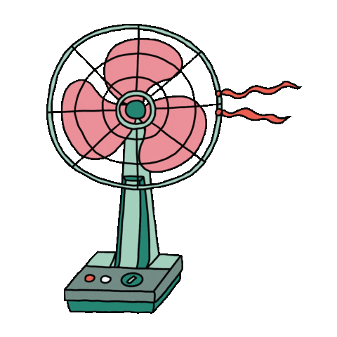
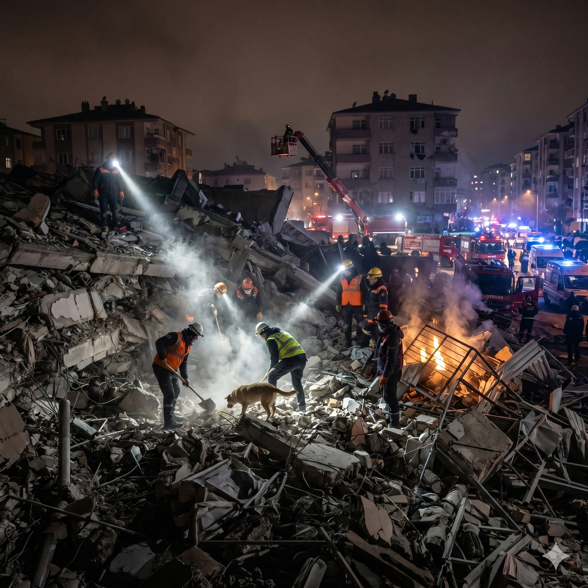

TONE // 선풍기 🌀 CBNU 2026

2026 캡스톤디자인 · 중간 발표 · 선풍기 🌀
음성의 텍스트·감정 분리를 통한
저트래픽 음성 통신
Team · 선풍기 🌀
이종찬 · 최재웅 · 임경택 · 민태원
충북대학교 컴퓨터공학과
github.com/Pachyhead/capstone_design_2026
01 배경 및 문제
배경 - 대역폭이 곧 비용인 환경

재난 현장
기지국이 끊긴 통신망
원양 선박
위성 회선 하나에 의존
문제 - 파형 전송의 트레이드오프
지금의 음성 통화는
‘소리 자체’를 보낸다
파형을 보내는 한, 비트레이트를 낮추면 음질도 함께 무너집니다.
12,650bps
현재 스마트폰 음성통화 방식(VoLTE · AMR-WB 코덱)의 대표 비트레이트
수백 bps 초저대역 코덱(Codec2 등)은 존재하지만 음질이 붕괴
소리를 다시 만들 정보만 보내면 되지 않을까?
02 핵심 아이디어
음성을 두 성분으로 분리한다
텍스트만 보내면 감정이 사라집니다
- 그 감정을 단 24bit로 함께 보내는 게 핵심
- TXT텍스트 - 무엇을 말했나Whisper STT로 추출 · 메시지마다 가변
- EMO감정 - 어떻게 말했나emotion2vec로 추출 · 24bit 고정 코드 (톤·운율 등 준언어 정보)
- VOX화자 목소리 - 미리 등록통화 전 화자 프로필(ref 음성)로 등록 → 전송 불필요
음성
입력텍스트
가변 · 수십 바이트감정 24bit
고정 압축 코드보낼 것 = 텍스트 + 압축된 감정
03 시스템 전체 구조1학기 · 송신→서버→수신 통합 완료
04 성과 ① · 감정 압축
1024차원을 24비트로
- 격자에 스냅
- 01emotion2vec 1024-d → 인코더 → 8차원 연속값
- 02각 차원을 8레벨 격자에 반올림(스냅) → 격자점 8⁸ ≈ 1,677만 가지 → log₂(8⁸) = 24bit8차원 × 8레벨 · 학습된 코드북 없이 격자 좌표가 곧 코드
- 03손실 = MSE + 0.5·KLKL이 원본·복원의 감정 분류 분포를 직접 맞춤 - 감정 보존의 핵심
감정 분류 보존 97.64% · 복원 코사인 99.33% · 24bit가 정보량 sweet spot
FSQ - Mentzer et al., “Finite Scalar Quantization: VQ-VAE Made Simple” · ICLR 2024 · arXiv:2309.15505
05 성과 ② · 감정 조건부 합성
감정을 화자 임베딩에 더해 넣는다
목표 · 고차원 감정 벡터 주입을 통한 감정 표현
- 01화자 임베딩은 등록된 ref 음성에서speaker encoder가 ref 음성 → 화자 임베딩(2048d) 추출
- 02감정을 더한다EmotionProjector(1024→2048, zero-init) 출력을 화자 임베딩에 합산 → 시작 시 baseline과 동일, 안정적 학습
- 03backbone은 frozen · 소수 파라미터만 학습talker LM attention에만 LoRA · 학습 = EmotionProjector + LoRA ≈ 9M
06 성과 ② · 평가·진단
Baseline vs Emotion - 전 감정 평가
장점 · Strength
Top-1 감정 일치율 향상 - 전체 222쌍 기준 17.1% → 23.0% (+5.9pp, 상대 +34%) · 무작위(7클래스) ~14% 기준선을 명확히 상회합니다.
한계 · Limitation
데이터 불균형 · 소수 감정 성능 정체 - fearful(n=3) 등 소수 감정은 데이터 부족으로 Baseline·Emotion 모두 Top-1 Match Rate 0.0%에 머물러 있습니다.
우리는 통화의 실시간성을 대체하지 않습니다 - 통화가 불가능한 대역에서 음성의 경험을 가능하게 합니다
※ 평가 프로토콜: 합성 음성 → emotion2vec 재추출 → 원본 발화와 비교
07 성과 ③ · 대역폭
한 발화 = 텍스트 + 감정 24bit - 전화의 약 1/100
평균 bps
목소리
감정
음성 메시지 Opus
16,000
✓✓
VoLTE 통화
12,650
✓✓
초저대역폭 Codec2
700
✓△
우리 +24bit
~128
✓✓
텍스트 메시지
~120
✗✗
텍스트 메시지에 3바이트를 얹으면, 목소리와 감정의 단서가 돌아옵니다.
같은 데이터 요금 1만원으로
통화
7시간
우리
한 달 ≈ 29일
쉬지 않고 말한다고 가정한 시간.
요금이 얼마든 비율(약 1/100)은 불변입니다.
요금이 얼마든 비율(약 1/100)은 불변입니다.
※ 막대는 대화체 평균 기준(실측은 시연 08) · bps = 음성 1초 발화당 데이터량 · 우리 ~128 = 텍스트 120(한국어 약 5글자/초) + 감정 8(24bit/발화, 3초 발화 기준)
※ Opus ~16kbps: WhatsApp·Telegram 모바일 음성 메시지 기준 · 1만원 = 데이터 40MB(250원/MB) 가정
※ Opus ~16kbps: WhatsApp·Telegram 모바일 음성 메시지 기준 · 1만원 = 데이터 40MB(250원/MB) 가정
08 TONE · 시연 · 메신저
기쁨
슬픔
놀람
분노
두려움
혐오
중립
기타
동일 발화 “와 진짜 태원이는 진짜 너무 대단한데?” - 원본 vs 우리 복원 vs 초저대역폭 코덱
원본 녹음 · 16kHz PCM ≈ 256 kbps
우리 복원 · 텍스트+24bit ≈ 170 bps
초저대역폭 코덱 · Codec2 ≈ 700 bps
메시지당 텍스트 + 24bit만으로 원본에 가깝게 복원 - 기존 초저대역폭 코덱은 더 쓰고도 음질이 무너집니다
※ 화자 ref 음성은 사전 1회 등록 · 전송량 불포함 · 비트레이트는 이 발화(2.5초) 실측
09 2학기 계획
완성으로 가는 다섯 걸음
STEP 1
데이터셋 확보 & TTS 재학습
다양한 화자·표현 감정이 담긴 음성 데이터를 수집하고, 이를 토대로 TTS 재학습 - 슬픔·혐오·두려움 등 아직 약한 감정까지 표현하고 화자에 종속되지 않는 감정 전달
STEP 2
주관 평가 (MOS · 청취 실험)
객관 지표(분류 일치율·복원 코사인)를 넘어, 사람 청취 기반 MOS·감정 전달 정확도로 실제 품질을 검증
STEP 3
페이로드 압축 - 비트패킹 & 한글 엔트로피 코딩
감정 코드는 비트 단위로 빈틈없이 패킹하고, 가변 한글 텍스트는 엔트로피 코딩으로 압축해 발화당 전송량을 한계까지 절감
STEP 4
다자 대화방 & 실시간 스트리밍
1:1을 넘어 여러 명이 함께하는 대화방으로 확장 · WebSocket / WebRTC 기반 실시간 통신 고도화
STEP 5
시연 가능한 서비스 형태로 완성
단말 앱과 서버를 패키징해, 사용자가 직접 써보는 시연 가능한 서비스 형태로 완성
10 정리 & Team · 선풍기 🌀
감정은 24비트로 압축, 감정 따라 달라지는 음성을 합성
- 전화의 ~1/100 대역폭으로
- 전화의 ~1/100 대역폭으로

👑 이종찬
@Pachyhead
Leader

최재웅
@zxxxv
Member
임경택
@KyeongTaek
Member

민태원
@TWMin
Member
감사합니다 · Q & A · github.com/Pachyhead/capstone_design_2026